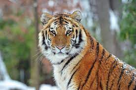
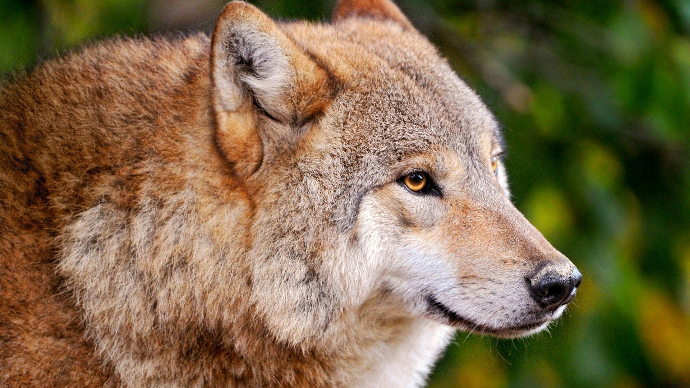
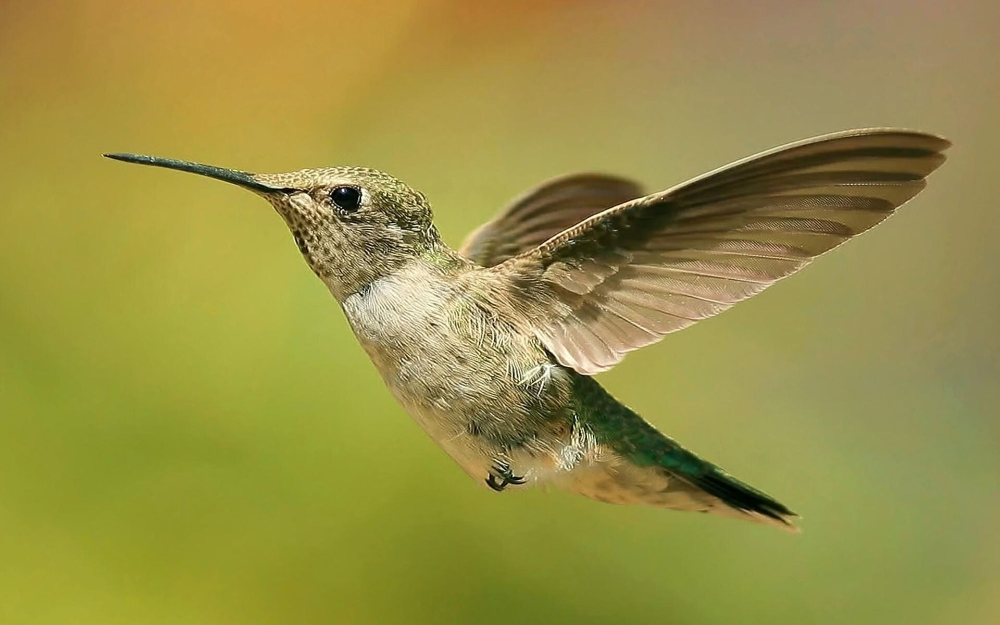
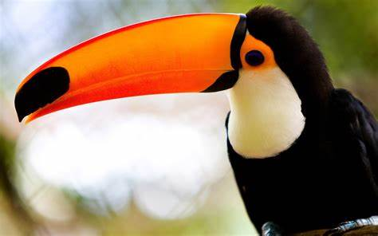
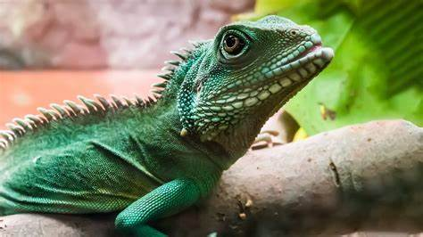
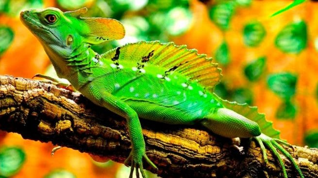
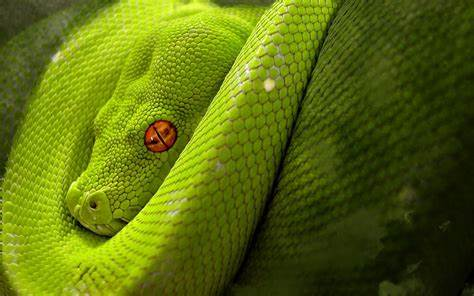

{kind=link}
{kind=link}
{kind=link}

| درندگان | ||
|---|---|---|
| |
 |  |
| پرندگان | ||
|  | |
 |
| خزندگان | ||
|  |  |  |
درندگان شیر (نام علمی: Panthera leo) گونهای پستاندار گوشتخوار از سردهٔ پلنگمانندها و خانوادهٔ گربهایان است. با بدنی بزرگ که وزنش در میان نرها گاه به ۲۵۰ کیلوگرم میرسد، این جانور نیرومند دومین عضو بزرگجثهٔ سردهٔ خود پس از ببر است. شیر به خاطر بدن بزرگ و هیبت و چالاکیش در هنگام شکار لقب «سلطان جنگل» را به خود گرفته؛ اگرچه بیشتر در مناطق گرمدشت آفریقا زندگی میکند و تنها تعداد کمی از آن در جنگل گیر در گجرات هند یافت میشوند. آنها طعمههای گوناگونی را بهعنوان خوراک اختیار میکنند که شامل بیشتر جفتسمسانان بومی آفریقا و بهندرت جانداران بزرگی چون فیل و زرافه میشوند.
پرندگان پَرَنده یا مُرغ[۱] به جانوران مهرهداری گفته میشود که بدنی پوشیده از پر دارند، خونگرم اند، بال دارند، بر روی دوپا راه میروند و تخم میگذارند. بیشتر پرندگان توانایی پرواز دارند. تا کنون حدود ۱۰٬۰۰۰ گونه پرنده در سراسر جهان شناسایی شده و پیشبینی میشود که به همین تعداد گونههای شناسایی نشده از پرندگان نیز بر روی زمین وجود داشته باشد. بیشتر پرندگان برای پرواز سازش یافتهاند. شکل آنها چنان است که مقاومت هوا را در هنگام پرواز کم میکند. افزون بر این، پرندگان پروازی نسبت به جثهای که دارند سبک اند. سبکی آنها تا حدی به جهت آن است که بیشتر استخوانهای آنها توخالی است. علاوه بر این، کیسههای هوادار کوچک در همه جای بدن خود دارند؛ کیسههای هوادار مانند بالنهای کوچک کار میکنند. پرهای بال و دم پرندگان کمک خوبی برای پرواز آنها است. ماهیچههای نیرومند بالها نیز در پرواز به آنها یاری میکند. پرندگان مانند پستانداران خونگرم بوده و بدن آنها حتی از بدن انسان گرمتر است. بدن برخی از پرندگان دمای در حدود ۴۵ درجه دارد.
خزندگان خَزَندِگان از آبپردهداران هستند. سطح بدن این جانوران از پولک و استخوانپوست پوشیده شدهاست. بدن پوشیده از پولک، یا قطعات و صفحات استخوانی متنوع است. خزندگان متعارف یعنی لاکپشتها، مارها و سوسمارها نخستین جانورانی هستند که وقتی نام خزندگان میآید، به ذهن خطور میکند. سوسمارها شامل طیف وسیعی از جمله مارمولکهای خانگی، آفتابپرستها، ایگواناها، سوسمارهای دمخاردار، بزمجهها و گروههای مختلفی از مارمولکهای بدون دست و پا میشوند. برخی جانورشناسان مارها را هم زیرگروهی از مارمولکهای بدون دست و پا قلمداد میکنند. خزندگان امروزی شامل دو گروه دیگر هم میشوند: تواتارا خزندهای با شباهت ظاهری به سوسمارهاست که در نیوزلند زندگی میکند؛ به رغم شباهت ظاهریاش، کالبد درونی تواتارا نشان میدهد بازمانده گروهی متفاوت از مارها و سوسمارهاست. تمساحها نیز گروهی دیگر از خزندگان هستند که نباید آنها را با سوسمارها اشتباه کرد. تمساحها بیشتر از آنکه به سوسمارها و مارها و لاکپشتها شبیه باشند، شباهتهای زیادی با پرندگان دارند.
{kind=link}
{kind=link}
{kind=link}
{kind=link}